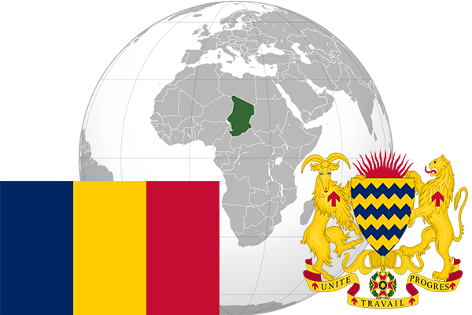

To`liq nomi: Chad Respublikasi
Region: Markaziy Afrika
Qonunchilik shakli: Respublika
Mustaqillik kuni: 11 -avgust 1960 yil (Fransiyadan)
Poytaxt: Njamena
Maydoni: 1 284 000 km² (dunyoda 20 -o`rinda )
Chegaradosh davlatlari: Niger, Liviya, Sudan, Markaziy Afrika Respublikasi, Kameron, Nigeriya
Aholisi: 11 193 452 (dunyoda 74 -o`rinda, 2013 -yil roʻyxat)
Aholi zichligi: 8,72 /km²
Aholining o`rtacha yoshi: 47,25 yil ( 48,3 ayollar, 46,2 erkaklar)
Rasmiy tili: fransuz va arab tili
Dini: 50% musulmon, 43% mahalliy dinlarga, 7% xristian
Pul birligi: Afrika franki
Telefon prefiksi: +235
Internet domen: .td
Xalqaro tashkilotlarga a`zoligi: BMT (1960 –yildan)
Dengiz va okeanlarga chiqishi: Yo`q
YIM: Butun: $ 26,8 mlrd, (2013 - yil roʻyxati)
Yirik shaharlari: Njamena, Mundu, Sarx